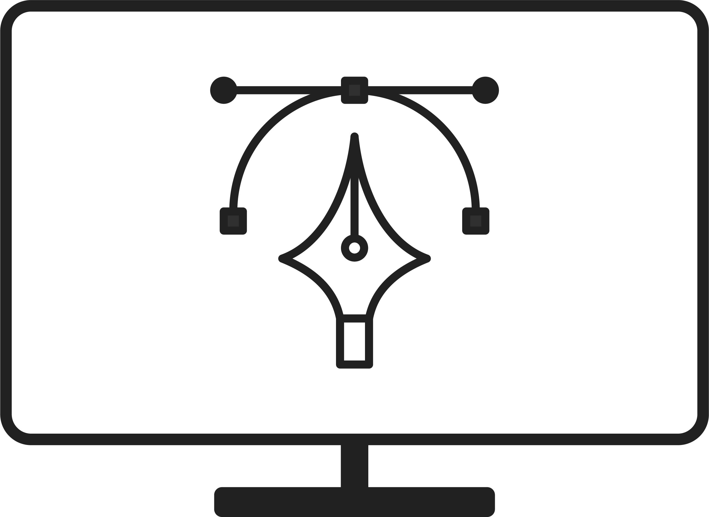
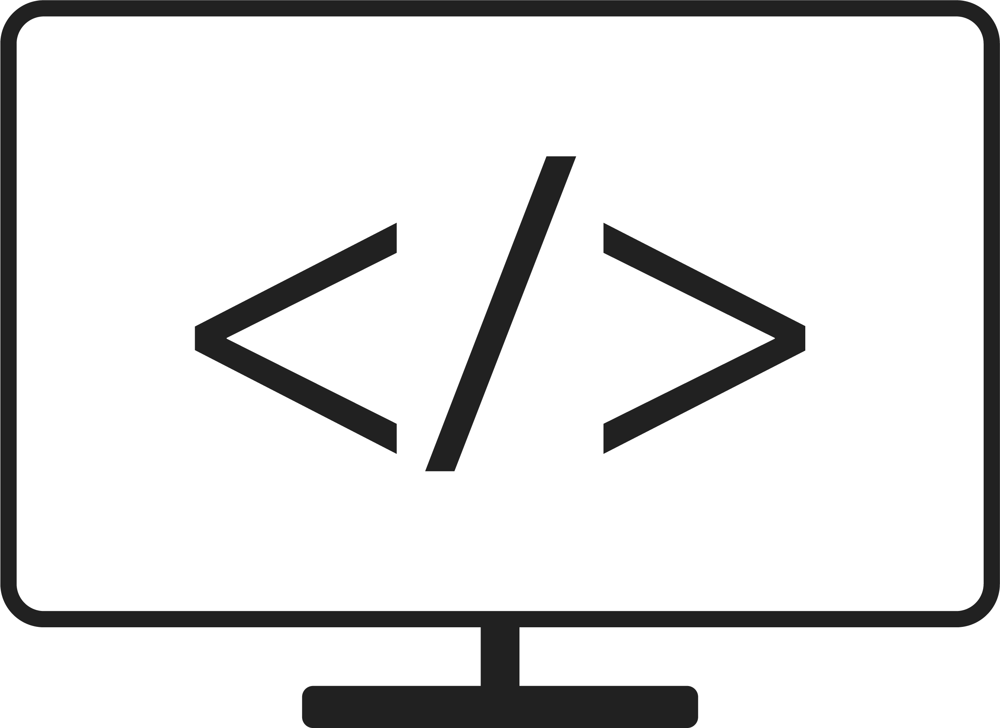

What I do?

Graphics Desgin
- Creating visual concepts and designs
for a variety of mediums, such as
websites, print materials,
advertisements, and packaging.
- Developing brand identities and visual
branding, including logo design and
the creation of brand guidelines.
- Creating user interfaces for websites
and mobile applications.
- Designing marketing and promotional
materials, such as brochures, flyers,
and posters.
- Producing illustrations and graphic
elements for use in various projects.
Motion Graphics
- Creating animated graphics and visual
effects for use in films, television shows,
commercials, and other video productions.
- Designing and producing animated logos and
title sequences for films, television shows,
and other video productions.
- Developing and animating 2D and 3D graphics
and visual effects for use in films, television shows,
commercials, and other video productions.
- Collaborating with filmmakers, directors,
and other production team members to ensure that
the final product meets their vision and goals.
- Advising on the technical aspects of motion
graphics design, such as the appropriate software
and hardware to use for a given project.

Web Development
- Designing and developing websites, web
applications, and other web-based software.
- Collaborating with clients and other team
members to determine the requirements
and goals of a web project.
- Creating wireframes, mockups, and other
visual aids to help clients understand
and approve the design of a website
or web application.
- Writing clean, efficient, and well-documented
code that adheres to industry standards
and best practices.
- Testing and debugging web-based software
to ensure that it is reliable, secure,
and user-friendly.
© Raju Kapali , All rights reserved